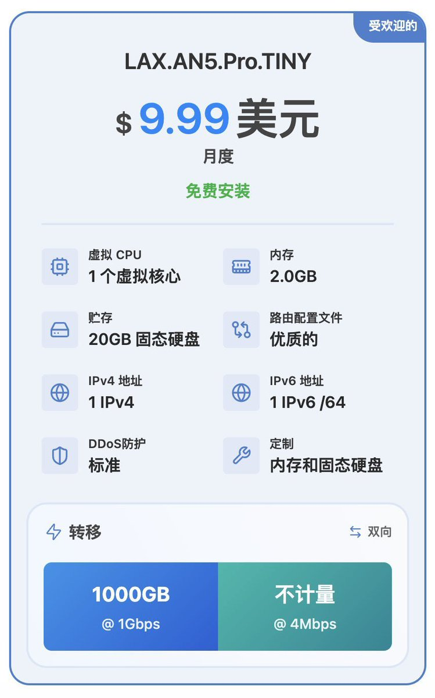

好多机场总是被打没法用，打算买DMIT ($9.9/mo)配3x-ui自建节点，用的是VLess+TCP+Reality方案，SNI用的是某云厂商的业务域名。不过总体来说，机场除了万人骑，还有机场主帮你配流媒体解锁、采购各地节点。如果是自建，就得每个地方都买一台，显得浪费。
虽然ClawCloud每个月有5刀的Credit，再加上GCP的免费VPS每个月200G流量但去Cloudflare的流量不免费，不过没有IPv6。搭配DMIT的三网优化线路，总算把我的美国原生的需求基本上是解决了~
不过没参加上黑5活动也是可惜，即使用完流量也会处于限速状态，也不用担心断网的问题。传送门：https://t.co/IxPfNNXeLN
更实惠的方案我推荐是搬瓦工，他家Box系列和DMIT都是一个品质，不过瓦工经常有活动，仅需29一年起步，流量从500G-1.5T不等，也是我在用的节点。https://t.co/LHRjzlzV3P
机房都是美西，也就是DC99（USCA_99），线路是三网回程都接入电信 CN2 GIA 线路。虽然官方说 no guaranteed，但是目前线路都是不会改的，只不过说线路稳定性没太大保障，不过目前实际来看也没什么大问题。
虽然ClawCloud每个月有5刀的Credit，再加上GCP的免费VPS每个月200G流量但去Cloudflare的流量不免费，不过没有IPv6。搭配DMIT的三网优化线路，总算把我的美国原生的需求基本上是解决了~
不过没参加上黑5活动也是可惜，即使用完流量也会处于限速状态，也不用担心断网的问题。传送门：https://t.co/IxPfNNXeLN
更实惠的方案我推荐是搬瓦工，他家Box系列和DMIT都是一个品质，不过瓦工经常有活动，仅需29一年起步，流量从500G-1.5T不等，也是我在用的节点。https://t.co/LHRjzlzV3P
机房都是美西，也就是DC99（USCA_99），线路是三网回程都接入电信 CN2 GIA 线路。虽然官方说 no guaranteed，但是目前线路都是不会改的，只不过说线路稳定性没太大保障，不过目前实际来看也没什么大问题。
